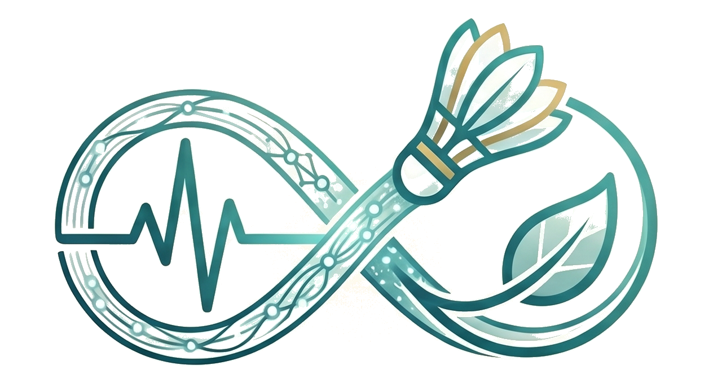

鄭群艦 CYUN JIAN CHENG
佳龍科技工程股份有限公司 ・ 永續專案課長
There is always a better way
ESG / 淨零碳
AI 應用
護理師跨域
PMP®
Six Sigma
工業與系統工程
🌙
📤
資料更新：2026-07-03
👤 關於我
中原大學工業與系統工程碩士（在職進修，預計 2027/06 畢業），護理師跨域轉職，以
IE × ESG × AI
三軸驅動製造業永續工程。持有 PMP®、ISO 三系統主導查證員（14064-1 / 14067 / 50001）、Six Sigma Green Belt，高壓急重症開刀房歷練的零失誤 SOP 執行力，是切入智能製造與 IE 改善場域的核心優勢。
100萬
年省顧問費
58%
行政效率提升
40+
跨域認證
⚙️ 工業工程
Six Sigma Green Belt
KPI 設定
製程改善
瓶頸分析
IATF 16949
ERP / MES
🌿 ESG / 能源
ISO 14064-1 碳盤查
ISO 14067 碳足跡
ISO 50001 能源管理
EHS 管理
ESCO 節能驗證
🤖 AI / 數位
IPAS AI 應用規劃師
Azure AI-900
Notion 自動化
Gemini
Google Cloud
📋 專案管理
PMP®
跨部門協作
里程碑管理
風險管理
📄 查看 / 下載履歷
📋
中文履歷
LinkedIn 版 · 含獲獎紀錄與代表證照
🌐
英文履歷
LinkedIn EN · ATS 格式優化版
📝
個人自傳
完整職涯脈絡 · IE × ESG × AI 跨域
🎓 學歷
輔英科技大學
護理科（副學士）
2015/09 ～ 2020/06
畢業
📷
長庚科技大學
護理系（學士）
2020/09 ～ 2022/06
畢業
📷
中原大學
工業與系統工程系（碩士）
2025/09 ～ 2027/06（預計）
在學中
💼 工作經歷 & 進修歷程
📅 時間軸
中國醫藥大學附設醫院
急重症開刀房 護理師
2022/06/06 ～ 2024/06/06
結束
📷
財團法人工業技術研究院
中興院區（總部）ESG 永續專業進修
2024/06/25 ～ 2024/08/14
結束
📷
佳龍科技工程股份有限公司
永續專案課長
2024/09/18 ～ 至今
在職中
📷
🏆 獎項與榮耀
🥈
TSAA 台灣永續行動獎 銀牌（SDG 07 可負擔能源）
2025/10/07
📷
🌿
2025 年度榮獲綠色企業環保標章
2025
📷
🏆
佳龍科技優秀員工獎
2026/03/26
📷
🎙️
受邀經濟部 IPAS 能力鑑定 Podcast 採訪
2026/04/13
📷
🌟
IPAS 獲證者名人榜
2026/05/08
🔗 查看公開頁面
📄
🎖️
桃園市淨零永續頒獎典禮 綠採績優獎牌
2026/08/04（預定）
📷
證照總數
58
已取得
44
考取中
14
類別
8
📈 每年取得數量（依類別）
全部
🌿 ESG 永續
🤖 AI 人工智慧
📋 專案管理
⚙️ 工業工程
🔐 資訊安全
💬 語言
🏥 醫療護理
🏸 體育競技
⏳ 考取中
📊
統計圖表
🔍
✕
所有證照
📊 證照統計圖表
✕
累積取得時間軸
類別分布
僅統計「已取得」且有完整 YYYY/MM/DD 日期之證照（共
0
張）
僅統計「已取得」證照；體育競技類含全國賽成績
⚠️ 無法載入圖片，請確認 Google Drive 連結已設為「知道連結的人可以檢視」
📅 學歷 & 工作歷程時間軸
✕
橫軸為年份，每條色帶代表一段學歷或工作經歷